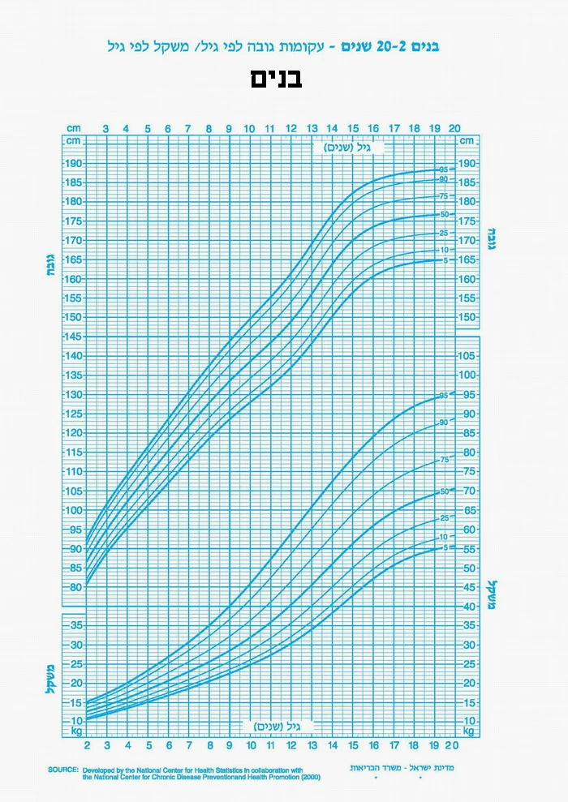
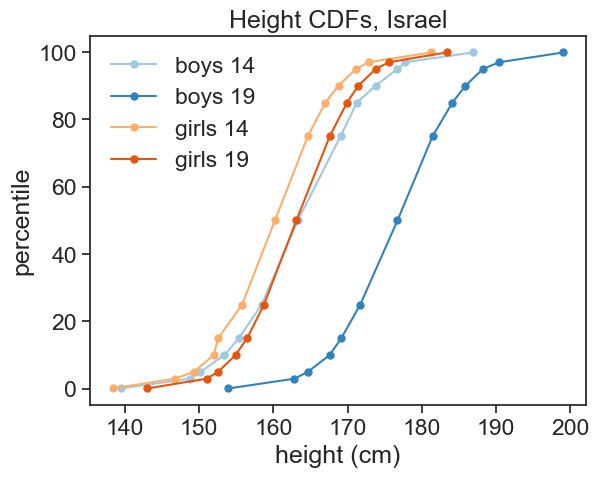
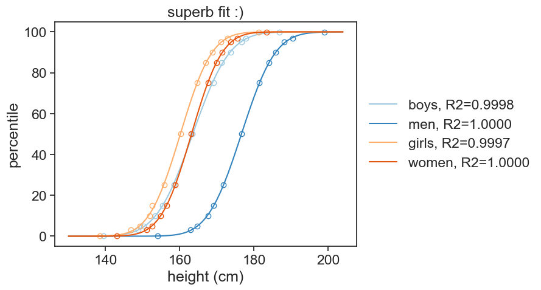
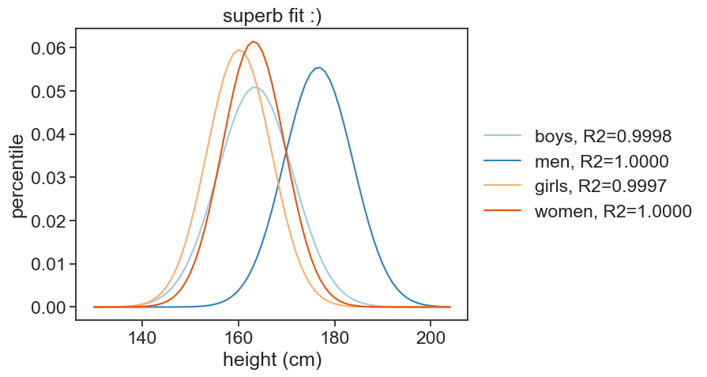

1 height data
I found growth curves for girls and boys in Israel:
{kind=link}
{kind=link}
For example, see this:

I used the great online resource Web Plot Digitizer v4 to extract the data from the images files. I captured the percentiles for boys and girls for ages 14 and 19:
Let’s plot this data as cdfs.
load data into dataframes
| height_boys_14 | height_boys_19 | height_girls_14 | height_girls_19 | |
|---|---|---|---|---|
| percentile | ||||
| 0.1 | 139.485981 | 153.971963 | 138.376623 | 143.051948 |
| 3.0 | 148.831776 | 162.850467 | 146.753247 | 151.038961 |
| 5.0 | 150.187668 | 164.638070 | 149.321534 | 152.566372 |
| 10.0 | 153.431635 | 167.587131 | 151.976401 | 154.926254 |
| 15.0 | 155.373832 | 169.158879 | 152.597403 | 156.493506 |
| 25.0 | 158.445040 | 171.715818 | 155.811209 | 158.761062 |
| 50.0 | 163.317757 | 176.729223 | 160.235988 | 163.116883 |
| 75.0 | 169.061662 | 181.447721 | 164.660767 | 167.610619 |
| 85.0 | 171.261682 | 184.112150 | 167.012987 | 169.935065 |
| 90.0 | 173.780161 | 185.871314 | 168.790560 | 171.445428 |
| 95.0 | 176.729223 | 188.230563 | 171.150442 | 173.805310 |
| 97.0 | 177.803738 | 190.420561 | 172.857143 | 175.584416 |
| 99.9 | 186.915888 | 199.065421 | 181.233766 | 183.376623 |
plot cdfs
fig, ax = plt.subplots()
colors = plt.cm.tab20c.colors
color_boys_19 = colors[0]
color_boys_14 = colors[2]
color_girls_19 = colors[4]
color_girls_14 = colors[6]
ax.plot(df['height_boys_14'], df.index, label="boys 14", color=color_boys_14, marker='o', markersize=5)
ax.plot(df['height_boys_19'], df.index, label="boys 19", color=color_boys_19, marker='o', markersize=5)
ax.plot(df['height_girls_14'], df.index, label="girls 14", color=color_girls_14, marker='o', markersize=5)
ax.plot(df['height_girls_19'], df.index, label="girls 19", color=color_girls_19, marker='o', markersize=5)
ax.legend(frameon=False)
ax.set(xlabel='height (cm)',
ylabel='percentile',
title='Height CDFs, Israel')[Text(0.5, 0, 'height (cm)'),
Text(0, 0.5, 'percentile'),
Text(0.5, 1.0, 'Height CDFs, Israel')]
1.1 naming
From now on, I will call 14-year-old boys “boys”, and 19-year-old boys “men”. Of course, 14-year-old girls are “girls”, and 19-year-old girls are “women”.
1.2 cdf
I would like to extract from the data the full cdf, for any height. I’ll try to fit each dataset to the cumulative distribution function of the gaussian (normal) distribution: \Phi(x) = \frac{1}{2} \left( 1 + \text{erf}\left(\frac{x - \mu}{\sigma \sqrt{2}}\right) \right) where \mu is the mean and \sigma is the standard deviation of the distribution. The error function \text{erf} is a sigmoid function, which is a good approximation for the cdf of the normal distribution.
fit data to erf function
def erf_model(x, mu, sigma):
return 50 * (1 + erf((x - mu) / (sigma * np.sqrt(2))) )
# initial guess for parameters: [mu, sigma]
p0 = [150, 20]
# fit the model
params14_boys, _ = curve_fit(erf_model, df['height_boys_14'].values, df.index.values, p0=p0)
params19_boys, _ = curve_fit(erf_model, df['height_boys_19'].values, df.index.values, p0=p0)
params14_girls, _ = curve_fit(erf_model, df['height_girls_14'].values, df.index.values, p0=p0)
params19_girls, _ = curve_fit(erf_model, df['height_girls_19'].values, df.index.values, p0=p0)
# Calculate R-squared
def calculate_r2(y_true, y_pred):
ss_res = np.sum((y_true - y_pred) ** 2)
ss_tot = np.sum((y_true - np.mean(y_true)) ** 2)
return 1 - (ss_res / ss_tot)
# Predicted values
percentile_pred_14_boys = erf_model(df['height_boys_14'], *params14_boys)
percentile_pred_19_boys = erf_model(df['height_boys_19'], *params19_boys)
percentile_pred_14_girls = erf_model(df['height_girls_14'], *params14_girls)
percentile_pred_19_girls = erf_model(df['height_girls_19'], *params19_girls)
# R-squared value
r2_14_boys = calculate_r2(df.index, y_pred_14_boys)
r2_19_boys = calculate_r2(df.index, y_pred_19_boys)
r2_14_girls = calculate_r2(df.index, y_pred_14_girls)
r2_19_girls = calculate_r2(df.index, y_pred_19_girls)
print(f"Boys: μ={params14_boys[0]:.0f}cm, σ={params14_boys[1]:.0f}cm, R-squared={r2_14_boys:.4e}")
print(f"Men: μ={params19_boys[0]:.0f}cm, σ={params19_boys[1]:.0f}cm, R-squared={r2_19_boys:.4e}")
print(f"Gilrs: μ={params14_girls[0]:.0f}cm, σ={params14_girls[1]:.0f}cm, R-squared={r2_14_girls:.4e}")
print(f"Women: μ={params19_girls[0]:.0f}cm, σ={params19_girls[1]:.0f}cm, R-squared={r2_19_girls:.4e}")Boys: μ=164cm, σ=8cm, R-squared=9.9975e-01
Men: μ=177cm, σ=7cm, R-squared=9.9996e-01
Gilrs: μ=160cm, σ=7cm, R-squared=9.9966e-01
Women: μ=163cm, σ=6cm, R-squared=9.9998e-01plot fitted curves
fig, ax = plt.subplots()
h = np.arange(130, 205, 1)
cdf_fit_boys14 = erf_model(h, *params14_boys)
cdf_fit_boys19 = erf_model(h, *params19_boys)
cdf_fit_girls14 = erf_model(h, *params14_girls)
cdf_fit_girls19 = erf_model(h, *params19_girls)
ax.plot(df['height_boys_14'], df.index, ls='None', marker='o', markerfacecolor='None', color=color_boys_14)
ax.plot(h, cdf_fit_boys14, color=color_boys_14, label=f"boys, R2={r2_14_boys:.4f}")
ax.plot(df['height_boys_19'], df.index, ls='None', marker='o', markerfacecolor='None', color=color_boys_19)
ax.plot(h, cdf_fit_boys19, color=color_boys_19, label=f"men, R2={r2_19_boys:.4f}")
ax.plot(df['height_girls_14'], df.index, ls='None', marker='o', markerfacecolor='None', color=color_girls_14)
ax.plot(h, cdf_fit_girls14, color=color_girls_14, label=f"girls, R2={r2_14_girls:.4f}")
ax.plot(df['height_girls_19'], df.index, ls='None', marker='o', markerfacecolor='None', color=color_girls_19)
ax.plot(h, cdf_fit_girls19, color=color_girls_19, label=f"women, R2={r2_19_girls:.4f}")
# legend beside axes
ax.legend(loc="center left",
bbox_to_anchor=(1.0,0.5),
frameon=False,)
ax.set(xlabel='height (cm)',
ylabel='percentile',
title='superb fit :)')[Text(0.5, 0, 'height (cm)'),
Text(0, 0.5, 'percentile'),
Text(0.5, 1.0, 'superb fit :)')]
1.3 pdf
Now that we have the mean and standard deviation, we can plot the probability density function (pdf) for each group.
Show the code
from scipy.stats import norm
#| code-summary: "plot fitted curves"
fig, ax = plt.subplots()
# plot now pdfs
pdf_boys_14 = norm.pdf(h, loc=params14_boys[0], scale=params14_boys[1])
pdf_boys_19 = norm.pdf(h, loc=params19_boys[0], scale=params19_boys[1])
pdf_girls_14 = norm.pdf(h, loc=params14_girls[0], scale=params14_girls[1])
pdf_girls_19 = norm.pdf(h, loc=params19_girls[0], scale=params19_girls[1])
ax.plot(h, pdf_boys_14, color=color_boys_14, label=f"boys, R2={r2_14_boys:.4f}")
ax.plot(h, pdf_boys_19, color=color_boys_19, label=f"men, R2={r2_19_boys:.4f}")
ax.plot(h, pdf_girls_14, color=color_girls_14, label=f"girls, R2={r2_14_girls:.4f}")
ax.plot(h, pdf_girls_19, color=color_girls_19, label=f"women, R2={r2_19_girls:.4f}")
# legend beside axes
ax.legend(loc="center left",
bbox_to_anchor=(1.0,0.5),
frameon=False,)
ax.set(xlabel='height (cm)',
ylabel='pdf',
)[Text(0.5, 0, 'height (cm)'),
Text(0, 0.5, 'percentile'),
Text(0.5, 1.0, 'superb fit :)')]
The graph above is very interesting!
- When girls are 14 year old, they have, on average, almost finished getting taller. The boys, on the other hand, still have a lot of growing to do.
- The average boy is as tall as an adult woman (both ~163 cm). Note, however, that the spread in the boys’ distribution (7.8 cm) is higher than that of women (6.5 cm). This has a large effect on the tails of the distribution: a lot more boys will be super tall or super short.